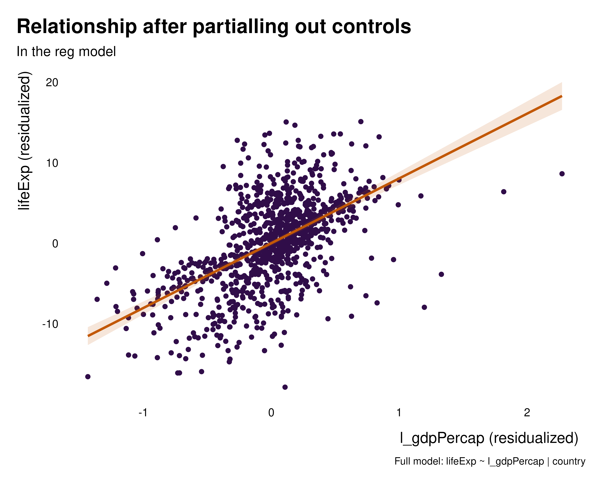
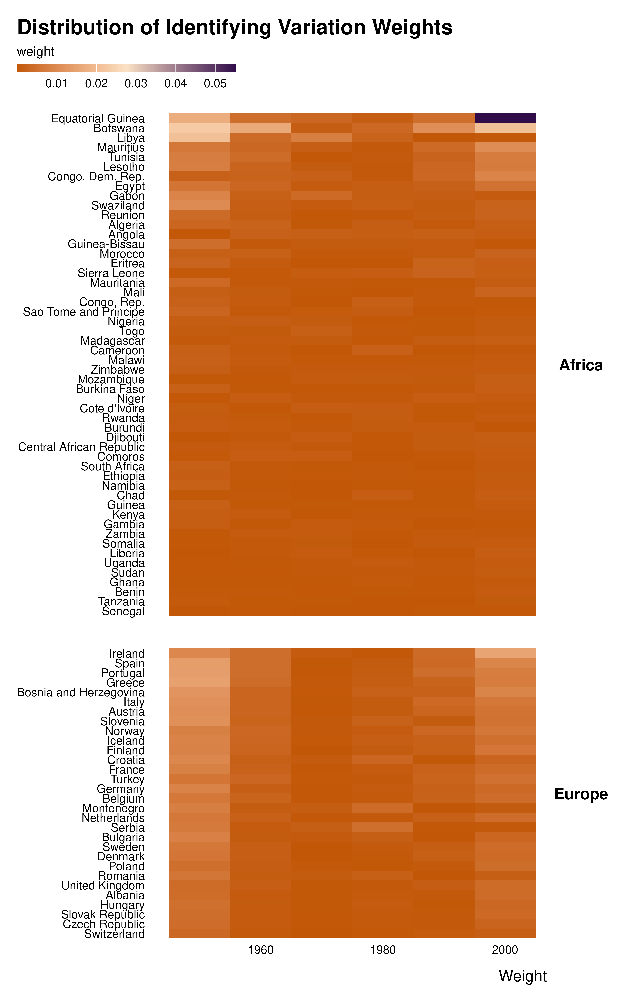
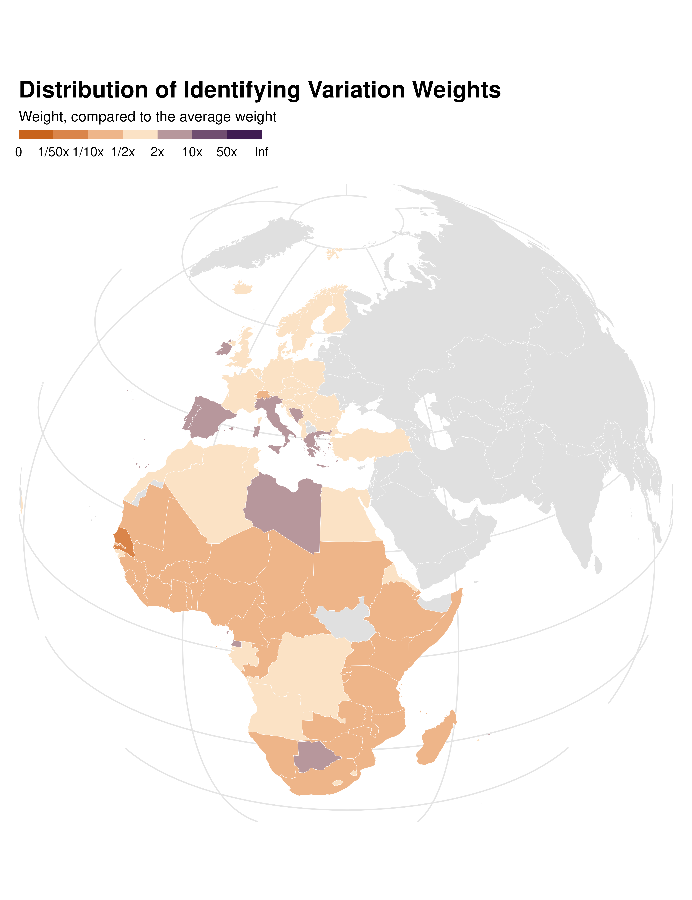
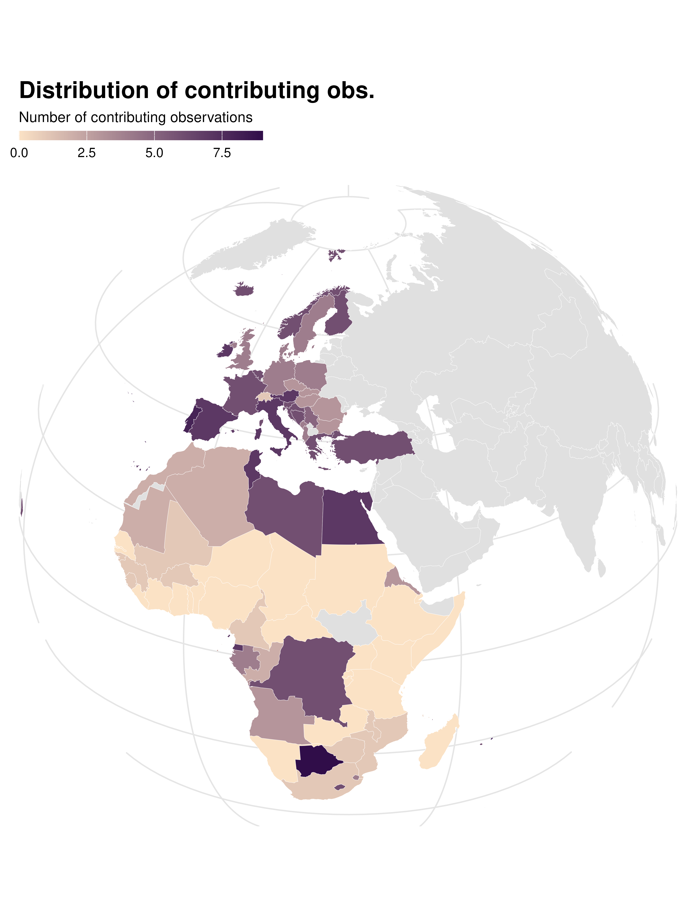
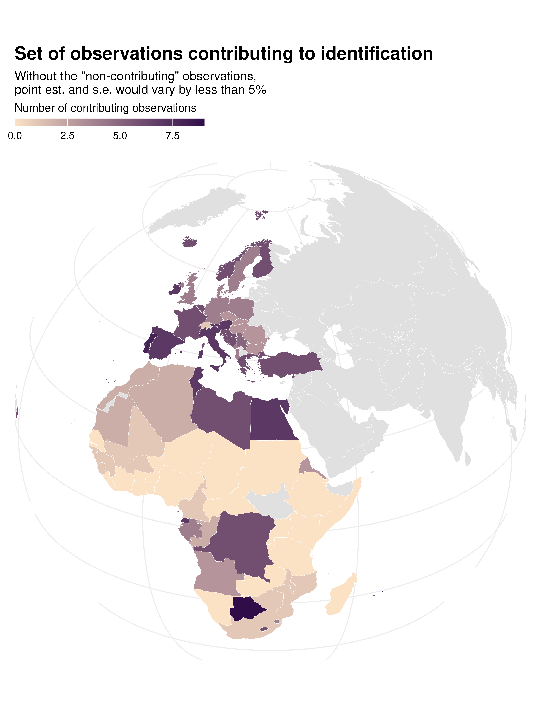

Own visualizations
own-viz.RmdThis vignette provides code that can easily be copied/pasted to make your own customized plots, going beyond the quick but less customizable functions provided in the package.
This package exists to facilitate the computation and analysis of
identifying variation weights. It therefore includes a set of functions
to very quickly visualize those weights. These functions have names
starting by idid_viz and are aimed to be used for
exploration. However, one may also want to build graphs for
communication and therefore they may want to customize their
graphs or build their own. This vignette provides code to do so quickly
and compares the resulting plots to the output of visualization
functions from the ididvar package.
Workflow to plot identifying variation weights
The workflow to make a plot from scratch is straightforward:
- Add a
weightvariable to the data set. Optionally, one can add acontribdummy. For that we need to determine the contribution threshold. Here I use theidid_contrib_thresholdto find a weight threshold below which removing observations does not change the point estimate or the standard error of the estimate of interest by more than a given proportion. - Compute the weights at a group level of interest (here state level) by summing weights of observations in this group.
- Plot them
Preparation
Let’s assume we have already ran the regression of interest. We also
add a decade variable and ISO codes from the
gapminder::country_codes dataset that we are going to use
later.
library(ididvar)
library(tigris)
library(dplyr)
library(ggplot2)
library(gapminder)
library(fixest)
library(rnaturalearth)
library(rnaturalearthdata)
gapminder_sample <- gapminder |>
mutate(
l_gdpPercap = log(gdpPercap),
decade = year %/% 10 * 10
) |>
filter(continent %in% c("Africa", "Europe")) |>
left_join(country_codes, by = join_by(country))
reg <- feols(
data = gapminder_sample,
lifeExp ~ l_gdpPercap | country,
cluster = "country"
)Relationship between x and y
Before anything, one may want to visualize the weights as well as the relationship between the dependent variable and the independent variable of interest.
Partialed out relationship
data_partial <-
tibble(
lifeExp_per = idid_partial_out(reg, "lifeExp", "l_gdpPercap"),
l_gdpPercap_per = idid_partial_out(reg, "l_gdpPercap")
)
data_partial |>
ggplot(aes(x = l_gdpPercap_per, y = lifeExp_per)) +
geom_point(size = 2, color = idid_colors_table[["base"]]) +
geom_smooth(
method = "lm",
formula = 'y ~ x',
color = idid_colors_table[["complementary"]],
fill = idid_colors_table[["complementary"]],
alpha = 0.1) +
theme_idid() +
labs(
title = "Relationship between life expectancy and log GDP per capita",
subtitle = "After partialling out country fixed effects",
x = "Log GDP per capita (residualized)",
y = "Life expectancy (residualized)"
)Such a mapping might be less legible when the sample size is large. In such instances, transparency, a bin or hex map or a bin-scatter can be useful tools to represent large numbers of observations.
ididvar equivalent
idid_viz_bivar(reg, "l_gdpPercap")
To compute data_partial completely manually, one can do
the following:
data_partial_manual <-
tibble(
lifeExp_per = residuals(
feols(gapminder_sample, lifeExp ~ 1 | country, cluster = "country")
),
l_gdpPercap_per = residuals(
feols(gapminder_sample, l_gdpPercap ~ 1 | country, cluster = "country")
),
idid_weight = (l_gdpPercap_per - mean(l_gdpPercap_per))^2
) |>
mutate(
idid_weight = idid_weight/sum(idid_weight),
idid_weight_log = log10(idid_weight * length(idid_weight))
)Cumulative weights
We first start by plotting the cumulative distribution of weights. We
can add a weight variable to our dataset, along with a
contrib dummy.
gapminder_weights <- gapminder_sample |>
mutate(
idid_weight = idid_weights(reg, "l_gdpPercap"),
contrib = idid_weight > idid_contrib_threshold(reg, "l_gdpPercap"),
contrib_name = ifelse(contrib,
"In the effective sample",
"Outside the effective sample")
)Own cumulative graph
gapminder_weights |>
arrange(idid_weight) |>
mutate(
obs_id = row_number(),
cum_idid_weight = cumsum(idid_weight)
) |>
ggplot(aes(x = obs_id, y = cum_idid_weight)) +
geom_line(linewidth = 1.2, color = idid_colors_table[["base"]]) +
geom_area(fill = idid_colors_table[["base"]], alpha = 0.2) +
theme_idid(aspect.ratio = 1) +
labs(
title = "Cumulative distribution of weights",
x = "Observation index\n(smallest to largest weight)",
y = "Cummulative sum of weights"
)
Bar plots
Let’s assume that we want to compare weights across countries. We compute our weight and mean contribution at that level.
country_weights <- gapminder_weights |>
group_by(country, iso_alpha, continent) |>
summarise(
idid_weight = sum(idid_weight, na.rm = TRUE),
contrib = sum(contrib, na.rm = TRUE),
.groups = "drop"
)We then make bar plots. For readibility and to produce a better graph, we order the states by weight.
Own weight graph
country_weights |>
mutate(country = forcats::fct_reorder(country, idid_weight)) |>
ggplot(aes(x = idid_weight, y = country)) +
geom_col(aes(fill = continent)) +
scale_fill_manual(values = c("#497C89", "#cf816b")) +
# facet_wrap(~ continent, scales = "free_y", space = "free_y") +
theme_idid() +
labs(
title = "Distribution of Identifying Variation Weights",
x = "Weight",
y = NULL,
fill = NULL
) ididvar weight
idid_viz_weights(reg, "l_gdpPercap", var_y = country, order = "y") +
geom_col(aes(x = idid_weight, y = country, fill = continent)) +
scale_fill_manual(values = c("#497C89", "#cf816b")) +
labs(y = NULL, fill = NULL)
Note that, in idid_viz functions, additional geoms can
be added on top of existing ones, to add some coloring scheme for
instance.
Own contribution graph
We can also plot graphs to represent and characterize the set of contributing observations.
gapminder_weights |>
count(decade, contrib_name) |>
ggplot(aes(x = decade, y = n, fill = forcats::fct_rev(contrib_name))) +
geom_col() +
coord_flip() +
theme_idid() +
scale_fill_manual(values = c(idid_colors_table[["mid"]], idid_colors_table[["base"]])) +
labs(
title = "Set of observations contributing to identification",
y = "Number of observations",
x = NULL,
fill = NULL
) ididvar contribution
idid_viz_contrib(reg, "l_gdpPercap", var_y = decade) +
labs(y = NULL)
#> NOTE: 2 fixed-effect singletons were removed (2 observations).
#> NOTE: 4 fixed-effect singletons were removed (4 observations).
#> NOTE: 3 fixed-effect singletons were removed (3 observations).
#> NOTE: 9 fixed-effect singletons were removed (9 observations).
#> NOTE: 13 fixed-effect singletons were removed (13 observations).
#> NOTE: 11 fixed-effect singletons were removed (11 observations).
#> NOTE: 11 fixed-effect singletons were removed (11 observations).
Heatmaps
Let’s assume that we now want to compare observations across years and decades. To do that, we build heatmaps and thus first aggregate data at the level we are interested in:
country_decade_weights <- gapminder_weights |>
group_by(country, decade, continent) |>
summarise(
idid_weight = sum(idid_weight, na.rm = TRUE),
contrib = sum(contrib, na.rm = TRUE),
.groups = "drop"
) We can then make the graphs we want.
Weights with no scale
country_decade_weights |>
mutate(country = forcats::fct_reorder(country, idid_weight, sum)) |>
ggplot(aes(x = decade, y = country, fill = idid_weight)) +
geom_tile() +
theme_idid() +
scale_fill_gradientn(
colors = c(idid_colors_table[["complementary"]],
idid_colors_table[["mid"]],
idid_colors_table[["base"]])
) +
facet_grid(continent ~ ., scales = "free_y", space = "free_y") +
theme(strip.text.y = element_text(angle = 0)) +
labs(
title = "Distribution of Identifying Variation Weights",
x = "Weight",
y = NULL
) 
The graph above was made plotting the raw weights. However, one value is much larger than the others. It hides all the variation in weight magnitude.
Weights with scale
I therefore introduced a specific scale that puts various observations in bins. In addition, by scaling weights with respect to an average weight, this scale allows to make graphs comparable to each other.
country_decade_weights |>
mutate(idid_weight_log = log10(idid_weight * length(idid_weight))) |>
# mutate(country = forcats::fct_reorder(country, weight, sum)) |>
ggplot(aes(x = decade, y = country, fill = idid_weight_log)) +
geom_tile() +
theme_idid() +
scale_fill_idid() +
#what's behind scale_fill_idid()
# scale_fill_stepsn(
# colors = c("#C25807", "#FBE2C5", "#300D49"),
# breaks = log10(c(1/100, 1/50, 1/10, 1/2, 2, 10, 50, 100)),
# labels = c("0", "1/50x", "1/10x", "1/2x", "2x", "10x", "50x", "Inf"),
# limits = c(-2, 2),
# na.value = "gray88"
# ) +
facet_grid(continent ~ ., scales = "free_y", space = "free_y") +
theme(strip.text.y = element_text(angle = 0)) +
labs(
title = "Distribution of Identifying Variation Weights",
fill = "Weight, compared to 1/n, the average weight",
x = NULL,
y = NULL
) 
ididvar weight equivalent
idid_viz_weights(reg, "l_gdpPercap", var_y = country, var_x = decade) +
facet_grid(continent ~ ., scales = "free_y", space = "free_y") +
theme(strip.text.y = element_text(angle = 0)) +
labs(x = NULL, y = NULL) Contributing observations
We can also make heatmaps of contributing observations:
country_decade_weights |>
mutate(country = forcats::fct_reorder(country, contrib, sum)) |>
ggplot(aes(x = decade, y = country, fill = contrib)) +
geom_tile() +
theme_idid() +
scale_fill_gradient(
low = idid_colors_table[["mid"]],
high = idid_colors_table[["base"]],
na.value = "gray88"
) +
facet_grid(continent ~ ., scales = "free_y", space = "free_y") +
theme(strip.text.y = element_text(angle = 0)) +
labs(
title = "Distribution of Identifying Variation Weights",
x = NULL,
y = NULL,
fill = "Number of contributing observations"
) ididvar contribution heatmap
idid_viz_contrib(reg, "l_gdpPercap", decade, country, order = "y") +
facet_grid(continent ~ ., scales = "free_y", space = "free_y") +
labs(x = NULL, y = NULL)Maps
Finally, we can make maps. To to that, we need a shape file (a
sf object) that we merge to the data.
world_sf <- rnaturalearth::ne_countries(scale = "medium", returnclass = "sf") |>
mutate(iso_alpha = adm0_a3)
#define a projection
proj_globe <-
coord_sf(crs = "+proj=ortho +lon_0=30 +lat_0=28", expand = FALSE) Weights map
data_sf <- world_sf |>
full_join(country_weights, by = join_by(iso_alpha)) |>
mutate(idid_weight_log = log10(idid_weight * nrow(country_weights)))
data_sf |>
ggplot() +
geom_sf(aes(fill = idid_weight_log), color = "white", linewidth = 0.1) +
proj_globe +
theme_idid() +
scale_fill_idid() +
labs(
title = "Distribution of Identifying Variation Weights",
fill = "Weight, compared to the average weight"
) +
theme(
panel.grid.major = element_line(colour = "gray90"),
axis.text.y = ggplot2::element_blank(),
axis.text.x = ggplot2::element_blank()
)
ididvar weights map
idid_viz_weights_map(reg, "l_gdpPercap", world_sf, "iso_alpha") +
proj_globe +
theme(panel.grid.major = element_line(colour = "gray90")) Contrib map
data_sf |>
ggplot() +
geom_sf(aes(fill = contrib), color = "white", linewidth = 0.1) +
theme_idid() +
proj_globe +
scale_fill_gradient(
low = idid_colors_table[["mid"]],
high = idid_colors_table[["base"]],
na.value = "gray88"
) +
labs(
title = "Distribution of contributing obs.",
fill = "Number of contributing observations"
) +
theme(
panel.grid.major = element_line(colour = "gray90"),
axis.text.y = ggplot2::element_blank(),
axis.text.x = ggplot2::element_blank()
)
ididvar contrib map
idid_viz_contrib_map(reg, "l_gdpPercap", world_sf, "iso_alpha") +
proj_globe +
theme(panel.grid.major = element_line(colour = "gray93")) 